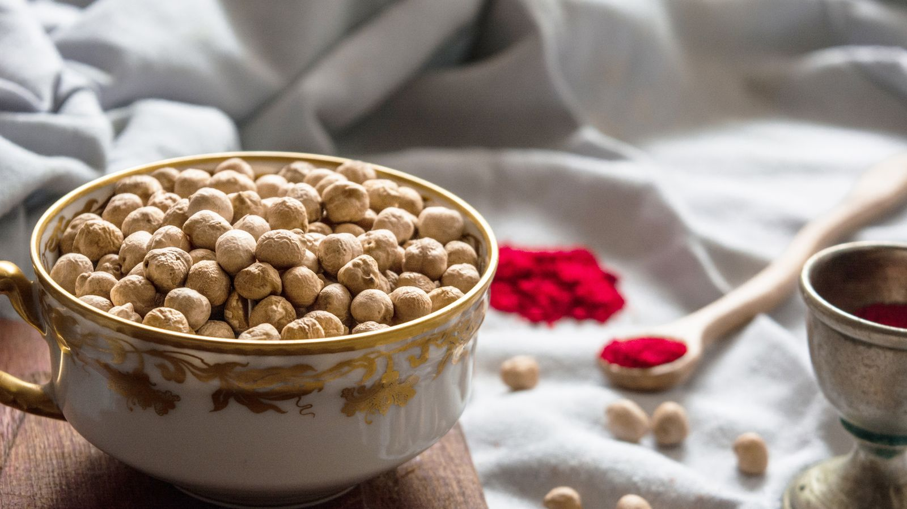

Quanta fibra por dia? O que o fibermaxxing não diz
Depois de anos de "proteína em tudo", o novo nutriente da moda é a fibra: o fibermaxxing manda empurrá-la o mais alto possível, uma colher de chia atrás da outra. O nutriente certo, puxado na direção errada. A evidência sobre fibra é das mais sólidas de toda a nutrição, mas esses mesmos estudos dizem duas coisas que a tendência ignora: existe uma faixa onde se concentra o grosso do benefício, e essa faixa não é a mesma para quem come 1.800 kcal e para quem come 3.200.

Em resumo
- O grosso do benefício está entre 25 e 29 g por dia. Na revisão publicada no Lancet sobre 185 estudos prospectivos e 58 ensaios, a redução de risco de mortalidade total, doença cardíaca, AVC, diabetes tipo 2 e câncer colorretal é máxima nessa faixa.
- "Pelo menos 25 g" não é o seu número se você treina muito. As LARN italianas também fixam uma referência por energia: 12,6-16,7 g a cada 1.000 kcal. Com 3.000 kcal viram 38-50 g por dia.
- A média italiana é de cerca de 17 g por dia segundo os dados do CREA: o problema real não é o excesso, é o buraco.
- Aumentar rápido incha de verdade. Nos ensaios com suplementos de fibra a flatulência é significativamente maior nos grupos de fibra: não é impressão, é efeito medido.
- A fibra dos alimentos e a do pó não fazem a mesma coisa. A primeira mostrou efeito sobre glicemia e pressão, a segunda sobretudo sobre glicemia e colesterol.
De onde vem o fibermaxxing
O mecanismo é o mesmo que levou a proteína para todo lado: um nutriente com boas credenciais, o sufixo -maxxing e a conclusão implícita de que, se um pouco faz bem, muito fará melhor. A diferença é que aqui o ponto de partida está certo: quase ninguém chega ao mínimo recomendado, e subir a fibra é a mudança com a melhor relação entre esforço e benefício que uma pessoa média pode fazer à mesa.
O problema nasce na passagem de "quase todo mundo come pouca" para "quanto mais, melhor". São duas frases diferentes, e os estudos sustentam apenas a primeira.
Quanta fibra é realmente necessária
A fonte mais sólida é a série de revisões sistemáticas publicada no Lancet em 2019: 185 estudos prospectivos, pouco menos de 135 milhões de pessoas-ano, mais 58 ensaios controlados com 4.635 adultos. Comparando quem come mais com quem come menos, os dados observacionais mostram redução de 15-30% na mortalidade total e cardiovascular, na doença coronariana, no AVC, no diabetes tipo 2 e no câncer colorretal.
E aqui vem o número que a tendência não cita: a redução de risco foi máxima com uma ingestão entre 25 e 29 g por dia. As curvas dose-resposta sugerem que acima dessa faixa ainda há algum ganho para cardiovascular, diabetes e alguns tumores, mas o salto grande é o que leva você para dentro da faixa, não o que leva além dela.
A meta-análise dose-resposta de 2023 na Frontiers in Nutrition confirma: risco relativo de mortalidade total 0,90 (IC 95% 0,86-0,93), cardiovascular 0,87, por câncer 0,91, com relação não linear para a mortalidade total. Não linear significa exatamente isso: a curva achata.
Há dois casos em que subir mais tem sentido medido. Em pessoas com diabetes, passar de 19 para 35 g por dia está associado a 14 mortes a menos a cada 1.000 (IC 95% 4-19). Em hipertensos, aumentar a fibra baixou a sistólica em 4,3 mmHg e a diastólica em 3,1 mmHg, com certeza alta e independentemente dos medicamentos em uso. Mas são populações clínicas: ali quem decide o número é o médico, não um carrossel.
Sua necessidade sobe com as calorias
Esta é a parte que falta em praticamente todo lugar, e a mais relevante para quem treina.
As LARN da Sociedade Italiana de Nutrição Humana não dão apenas o limiar de "pelo menos 25 g por dia": dão também uma referência relacionada à energia, 12,6-16,7 g de fibra a cada 1.000 kcal. É uma escolha lógica, porque a fibra vem do alimento, e quem come mais come mais alimento.
Aplicada às calorias reais, essa referência muda o alvo, como se vê no gráfico acima. Para uma pessoa sedentária de 1.800 kcal, o intervalo é 23-30 g. Para quem treina quatro vezes por semana e come 3.000 kcal, vira 38-50 g. Em fase de ganho, com 3.500 kcal, 44-58 g. Quem repete "25 g bastam" está dando a um powerlifter de 95 kg o número de alguém que come metade; e quem faz fibermaxxing com 1.600 kcal em definição está empurrando um número que para ele já é alto.
De onde tirar essas calorias é uma conversa que cruza com a qualidade dos carboidratos: falamos disso em carboidratos engordam?.
O que a pesquisa diz de verdade
| Afirmação comum | Veredito | Fonte |
|---|---|---|
| "Mais fibra é sempre melhor" | A precisar: o grosso do benefício está entre 25 e 29 g, depois a curva achata | Reynolds et al., 2019; Yao et al., 2023 |
| "25 g por dia bastam para todo mundo" | A precisar: as LARN também dão 12,6-16,7 g por 1.000 kcal | LARN SINU; Marconi et al., 2025 |
| "A fibra desincha a barriga" | Desmentido no curto prazo: mais fibra, mais flatulência (SMD 0,80) | van der Schoot et al., 2022 |
| "Um scoop de psyllium resolve" | A precisar: funciona na regularidade, mas a fibra dos alimentos mostrou efeitos mais amplos | van der Schoot 2022; Jiang et al., 2025 |
| "Antes de treinar, quanto mais fibra melhor" | Desmentido: reduzi-la é a estratégia mais usada contra sintomas gastrointestinais no exercício | Scrivin et al., 2022 |
Por que no começo incha (e a culpa não é sua)
Na meta-análise sobre 16 ensaios controlados e 1.251 adultos com constipação crônica, a fibra funcionou: responderam ao tratamento 66% dos participantes (311 de 473) contra 41% dos controles (134 de 329), risco relativo 1,48. Mas no mesmo trabalho a flatulência foi significativamente maior nos grupos de fibra, com diferença média padronizada de 0,80 (IC 95% 0,47-1,13), um efeito grande.
É por isso que "aumentei os vegetais e inchei" não é fracasso: é a resposta esperada a uma mudança rápida. No mesmo trabalho, as melhorias em frequência e consistência das evacuações só apareceram com duração de pelo menos quatro semanas. O inchaço é a primeira semana, o benefício vem da quarta em diante. A consequência prática é uma só: suba em degraus, 3-5 g por semana.
Suplemento ou comida
O pó não é um atalho equivalente. Na comparação mais clara que temos, uma meta-análise de 2025 com 30 ensaios e 1.140 participantes separou a fibra intrínseca (a que está dentro do alimento integral) da fibra isolada (extraída e adicionada). A primeira reduziu a glicemia de jejum e a pressão sistólica (-2,86 mmHg). A segunda reduziu glicemia e colesterol total, mas não a pressão.
Não é um argumento contra suplementos: o psyllium tem bons dados sobre regularidade, em doses acima de 10 g por dia e por pelo menos quatro semanas. É um argumento contra a ideia de que um scoop substitui um prato de leguminosas. A matriz do alimento conta, como também acontece quando se compara proteína vegetal e animal.
Fibra e treino: a hora importa
Um detalhe que o fibermaxxing não considera é o quando. Num estudo com 137 atletas de endurance com histórico de sintomas gastrointestinais associados ao exercício, entre 277 estratégias relatadas a redução da fibra foi a estratégia alimentar mais usada (15,2%, 42 relatos) e uma das mais bem avaliadas, com eficácia mediana de 4 em 5. Depois vinham a exclusão de laticínios e a dieta com baixo teor de FODMAP.
Duas ressalvas honestas: esses dados vêm de atletas de endurance, não de quem levanta peso, e os sintomas da corrida têm componentes mecânicos que não existem na academia. Mas a lógica se sustenta também debaixo da barra: um prato com 15 g de fibra duas horas antes de uma sessão pesada de agachamento é discutível; o mesmo prato no jantar não incomoda ninguém.
Como aplicar
Primeira regra: pare de olhar as listas "por 100 gramas". No banco de dados do CREA a pimenta-do-reino tem 25,9 g de fibra por 100 g, mas a porção é de 1 grama: são 0,26 g de fibra. O que conta é quanta fibra existe numa porção que você comeria de verdade.
Segunda regra: os grandes saltos vêm de poucas trocas, não de vinte pequenos ajustes.
| Troca | Antes | Depois | Ganho |
|---|---|---|---|
| O acompanhamento de amido | Arroz branco cozido, 260 g: 0,5 g | Macarrão integral cozido, 180 g: 6,3 g | +5,8 g |
| O pão | Pão branco, 50 g: 1,9 g | Pão integral, 50 g: 3,2 g | +1,3 g |
| Um prato a mais | — | Lentilhas cozidas, 150 g: 12,4 g | +12,4 g |
| +19,5 g no total |
Elaboração Nurvan com dados CREA 2019. Partindo dos 17 g da média italiana, essas três trocas levam a cerca de 36-37 g por dia.
Terceira regra: a casca conta mais do que você pensa. Uma maçã de 150 g com casca dá 3,9 g de fibra, a mesma maçã descascada 3,0 g: um quarto vai embora com a faca.
Quatro pontos práticos:
- Ache o seu número, não o genérico. Multiplique suas calorias por 0,0126 e por 0,0167: esse é o seu intervalo. Com 2.500 kcal são 32-42 g.
- Suba 3-5 g por semana. O inchaço inicial é real e passa, mas só se você der tempo a ele.
- Um prato de leguminosas rende mais que todo o resto junto. 150 g de lentilhas cozidas valem quatro maçãs.
- Afaste a fibra do treino. A refeição pré-treino é a única em que vale a pena mantê-la baixa; recupere a fibra do dia no jantar.
E se você já conta a proteína por refeição, a fibra é o segundo número a colocar ao lado: quanta proteína por refeição é o texto irmão deste.
Nurvan: a fibra você vê, não adivinha
A seção de nutrição do Nurvan usa o banco de dados CREA, as mesmas tabelas de onde vêm os números deste artigo: cada alimento que você lança traz junto a sua fibra, e o total do dia se atualiza ao lado de calorias e proteínas. Com a sua necessidade energética já no app, você vê na hora se as suas 3.000 kcal chegam a 38 g ou param em 18. Experimente o Nurvan
Perguntas frequentes
Quanta fibra devo comer por dia?
O mínimo da LARN e da EFSA é 25 g por dia para um adulto. Nas revisões, o grosso da redução de risco se concentra entre 25 e 29 g. Se você treina e come bastante, a referência LARN relacionada à energia (12,6-16,7 g por 1.000 kcal) é mais útil: com 3.000 kcal são 38-50 g.
Fibermaxxing faz mal?
Nos estudos, o efeito medido do aumento rápido é mais flatulência, não um dano. O risco real é prático: subir rápido demais gera desconforto que faz você desistir, e nenhum estudo mostra que ir muito além da faixa de 25-29 g traga benefício proporcional. Se você tem uma condição intestinal diagnosticada, a quantidade de fibra não é decisão para tomar sozinho.
Melhor fibra de suplemento ou de comida?
As duas funcionam, para objetivos diferentes. Na meta-análise de 2025 a fibra dentro dos alimentos integrais reduziu glicemia de jejum e pressão sistólica; a isolada reduziu glicemia e colesterol total, mas não a pressão. O psyllium tem boa evidência para a regularidade, acima de 10 g por dia e por pelo menos quatro semanas.
A fibra me incha antes de treinar: o que faço?
Afaste o grosso da fibra da sessão e deixe leve a refeição pré-treino. Em atletas de endurance com sintomas gastrointestinais, reduzir a fibra é a estratégia alimentar mais usada e uma das mais eficazes.
Leia também
- Quanta proteína por refeição: existe um limite? — o outro número que vale contar refeição a refeição.
- Carboidratos engordam? A gordura escondida — de onde vêm de verdade as calorias a mais.
- Proteína vegetal ou animal para os músculos? — por que a matriz do alimento conta.
Fontes
- Reynolds A, Mann J, Cummings J, et al., 2019. Carbohydrate quality and human health: a series of systematic reviews and meta-analyses. Lancet 393(10170):434-445. PMID 30638909 · DOI 10.1016/S0140-6736(18)31809-931809-9)
- Yao F, Ma J, Cui Y, et al., 2023. Dietary intake of total, vegetable, fruit, cereal, soluble and insoluble fiber and risk of all-cause, cardiovascular, and cancer mortality. Front Nutr 10:1153165. PMID 37854351 · DOI 10.3389/fnut.2023.1153165
- Reynolds AN, Akerman AP, Mann J, 2020. Dietary fibre and whole grains in diabetes management: systematic review and meta-analyses. PLoS Med 17(3):e1003053. PMID 32142510 · DOI 10.1371/journal.pmed.1003053
- Reynolds AN, Akerman A, Kumar S, et al., 2022. Dietary fibre in hypertension and cardiovascular disease management: systematic review and meta-analyses. BMC Med 20(1):139. PMID 35449060 · DOI 10.1186/s12916-022-02328-x
- van der Schoot A, Drysdale C, Whelan K, Dimidi E, 2022. The effect of fiber supplementation on chronic constipation in adults: an updated systematic review and meta-analysis of randomized controlled trials. Am J Clin Nutr 116(4):953-969. PMID 35816465 · DOI 10.1093/ajcn/nqac184
- Jiang S, Cai C, Deehan EC, et al., 2025. The physiological effects of intrinsic and isolated arabinoxylans on human immunometabolic response: a systematic review and meta-analysis. Food Res Int 218:116866. PMID 40790673 · DOI 10.1016/j.foodres.2025.116866
- Marconi S, Gilberti G, Romele E, et al., 2025. Translation and cross-cultural adaptation of a validated questionnaire to assess dietary fiber intake among the Italian population. Nutrients 17(6):1084. PMID 40292515 · DOI 10.3390/nu17061084
- Scrivin R, Costa RJS, Pelly F, Lis D, Slater G, 2022. An exploratory study of the management strategies reported by endurance athletes with exercise-associated gastrointestinal symptoms. Front Nutr 9:1003445. PMID 36438762 · DOI 10.3389/fnut.2022.1003445
Valores de referência: LARN — Livelli di Assunzione di Riferimento di Nutrienti ed energia, SINU, IV revisão (pelo menos 25 g por dia; 12,6-16,7 g por 1.000 kcal); EFSA, parecer de 26 de março de 2010 (25 g por dia adequados para a função intestinal normal em adultos). Dados alimentares: tabelas CREA — Centro di ricerca Alimenti e Nutrizione, atualização de 2019. Tema escolhido a partir de sinais de tendência de novembro de 2026 sobre o "fibermaxxing" (cobertura na imprensa internacional e italiana, e primeira página de busca ocupada por conteúdos genéricos que não relacionam a necessidade às calorias). Fontes científicas consultadas através do PubMed.
*Giammaria Loi é o fundador do Nurvan. Treina com pesos desde 2012, trabalha como personal trainer e coach certificado pela FIPE desde 2013 e compete em powerlifting em nível nacional desde 2018. Cada artigo que assina parte dos estudos científicos e chega ao que funciona de verdade na academia. Página do autor*
Nota: conteúdo informativo, não substitui a opinião de um médico ou de um profissional qualificado.